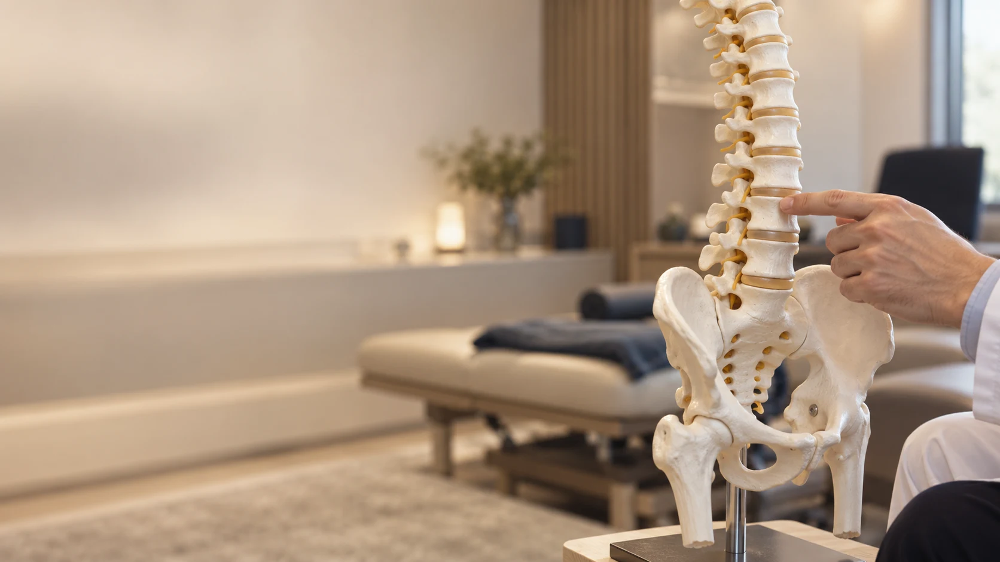
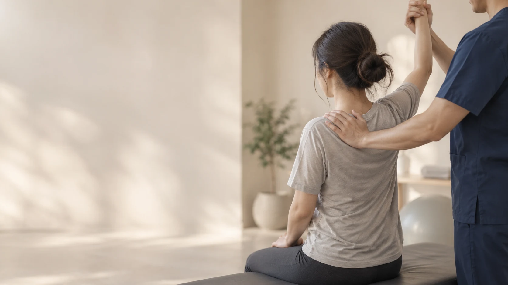
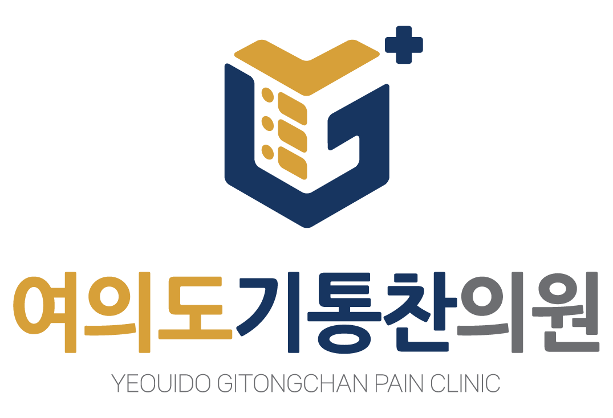
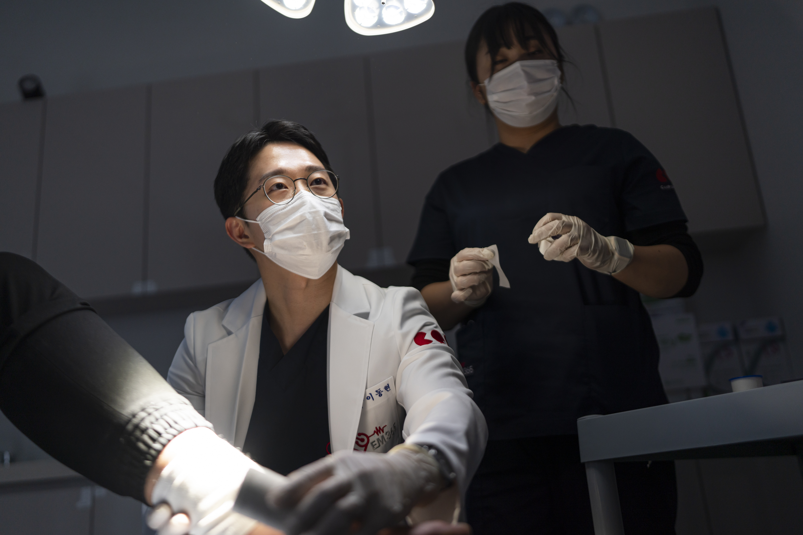
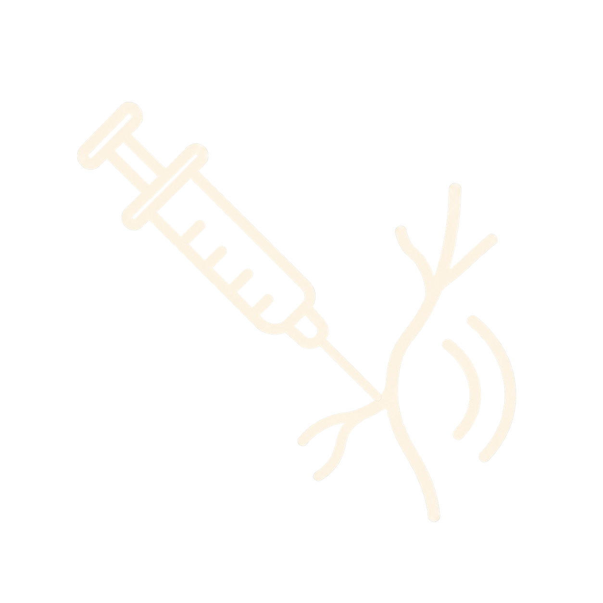
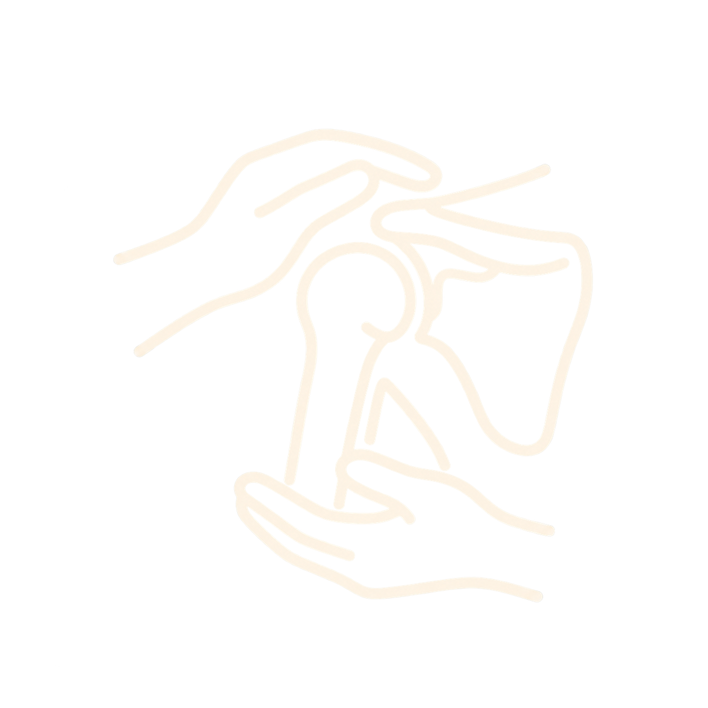
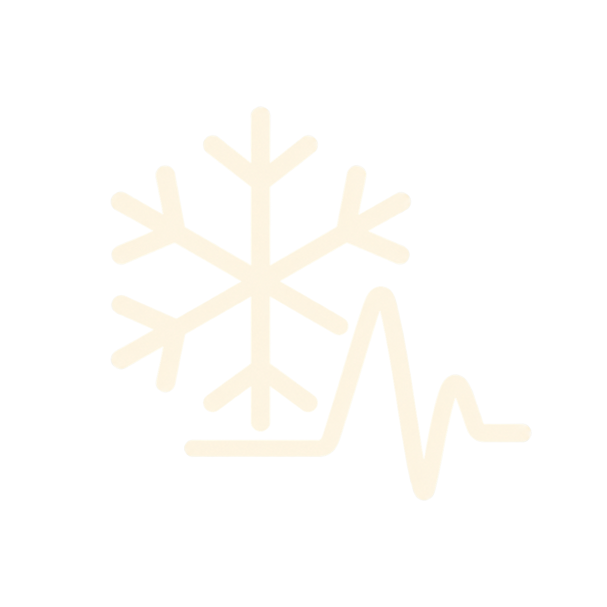

가족에게 진료하는 마음으로

아픈 곳이 아니라,
아픈 이유를 봅니다.

통증을 넘어, 다시 편안한 움직임으로
다시, 기통찬 일상으로

기통찬의 뜻과 "다시 기통찬 일상으로"
기통찬이라는 이름에는 아픈 곳만 잠시 편하게 하는 것을 넘어,
몸이 보내는 신호를 세심하게 살펴 아픈 이유를 해결하여
다시 건강한 일상으로 돌아갈 수 있도록 돕겠다는 진료의 방향을
담았습니다.
YEOUIDO GITONGCHAN
여의도기통찬의
여의도기통찬의
5가지의 진료 원칙
우리가 지켜가는 원칙은 단순한 기준이 아닌,
환자를 대하는 태도이자 진료를 이어가는 약속입니다.
환자의 입장에서 생각하고, 신뢰와 배려를 바탕으로 진료하겠습니다.
-
01 언제나 환자의 입장에서 생각하겠습니다.
-
02 통증의 원인을 세심하게 살피겠습니다.
-
03 정직함으로 신뢰를 쌓겠습니다.
-
04 작은 목소리에도
귀 기울이겠습니다. -
05 더 나은 진료를 위해
끊임없이 배우겠습니다.
왜 같은 곳을 치료해도 쉽게 좋아지지 않을까.
진료를 하며 쉽게 좋아지지 않는 환자들을 만날 때마다 통증이 나타나는 곳만 보고 있는 것은 아닌지 고민했습니다.
그리고 늘 한 번 더 생각했습니다.
내 가족이라면, 어떤 치료를 해주고 싶을까
그 고민은 통증이 나타나는 곳만 보는 것이 아니라,
근육과 신경의 관계를 살피며 통증의 원인을 더 깊이 찾아가는 진료로 이어졌습니다.
내 가족에게도 권할 수 있는 치료를 원칙으로, 환자에게 꼭 필요한 치료를 고민합니다.
이동현 대표원장
Pain Management System
여의도기통찬의 대표 진료 프로그램
통증을 넘어 회복으로, 다시 빛나는 일상을 위해.
-
01

기통찬 주사치료 스테로이드 없이, 몸의 회복을 돕습니다
- 기통샷주사 긴장된 근육과 예민해진 신경을 안정시켜 회복 유도
- 정밀 척추 신경주사 C-arm으로 목표 부위를 확인해 정밀 치료
- 통증만 가리지 않고, 원인이 되는 ‘불’을 찾아 치료
-
02

도수치료·체외충격파 조직의 회복과 편안한 움직임을 돕습니다
- 도수치료 긴장된 근육과 근막을 풀어 통증 완화와 기능 회복
- 체외충격파 굳고 지친 조직에 자극을 주어 회복을 돕습니다
- 통증을 줄이는 데 그치지 않고, 기능과 움직임까지 회복
-
03

통증·회복 케어 통증을 덜고, 편안한 회복을 돕습니다
- 크라이오 냉각 자극으로 통증 신호를 낮추고 움직임 개선
- 페인케어 반복되는 통증 신호를 조절해 통증의 악순환 차단
- 기능회복 수액 필요한 영양과 수분을 채워 컨디션 회복
NIGHT CARE SYSTEM
월 · 화 · 목 · 금 야간진료
수요일은 저녁 7시까지 진료
저녁 8시까지 야간진료
대기 공간 실제 사진 영역
진료실 실제 사진 영역
초음파실 실제 사진 영역
수액실 실제 사진 영역